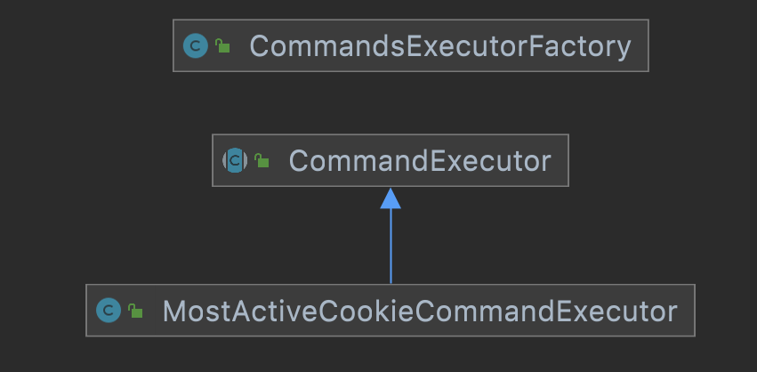
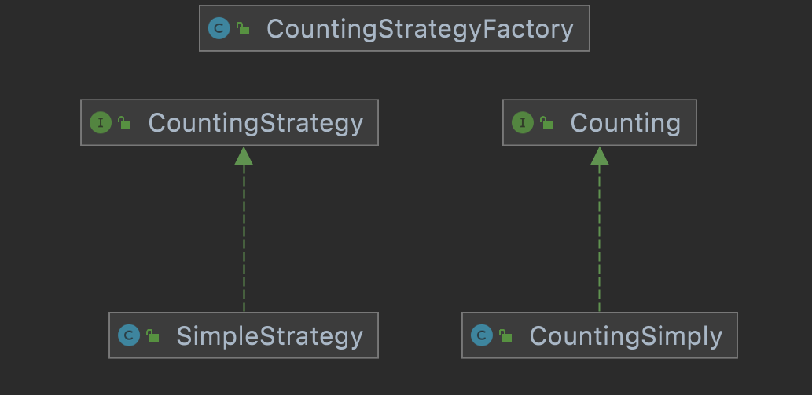
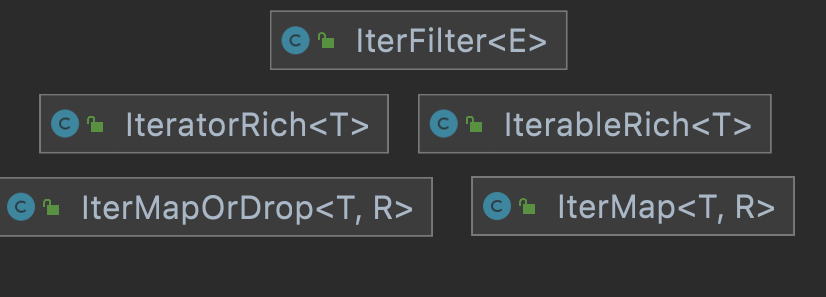
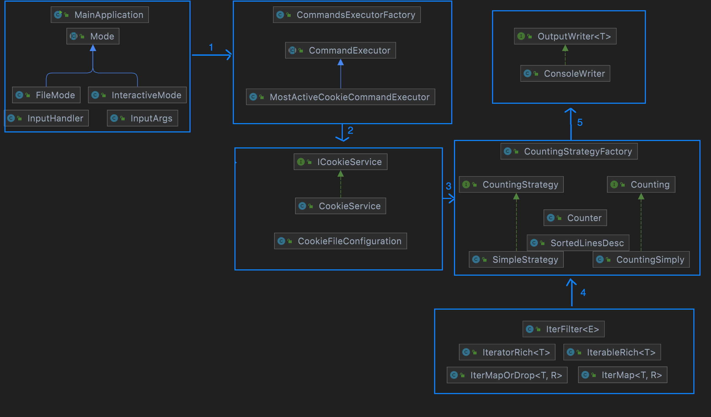

Cookie analyzer parse cookies given in csv file and gives back required output as per customer input filters
QuantCast_Assignment folderExecute below commands
docker build -t myproj .
docker run -ti -v /path/to/inputfiles:/test myproj
Replace /path/to/inputfiles with folder path to input files
most_active_cookie -f input1.csv -d 2018-12-09 -h
most_active_cookie is a command for fetching most active cookie-f input1.csv read the file from /path/to/inputfiles folder which was mounted in docker-d 2018-12-09 accepts the date in yyyy-mm-dd format-h [optional] Used for skipping the first line if header is present-failfast [optional] Used for skipping the bad data and proceed with other records in the file./entry.sh -f input1.csv -d 2018-12-09 MainApplication-f input1.csv read the file from /path/to/inputfiles folder which was mounted in docker-d 2018-12-09 accepts the date in yyyy-mm-dd format-h [optional] Used for process first line if header is not present-failfast [optional] Used for skipping the bad data and proceed with other records in the filemvn testmvn verifymvn verify (or a full mvn clean install) is called. Point a browser at the output in target/site/jacoco-both/index.html to see the report.| Load full file | Lazy Load | Database ( trie ) |
|---|---|---|
| O(logn) | O(n) | O(logn) |
| Binary search | Linear Search | Trie |
| Used in case of small files | Used in case of large files | Used for fetching most active record for(day/month/year/hour) |
least_freq_used etc without modifying existing code (Open-Close principle)

failfast or failsafe and to decide on lazy load or load all at once 